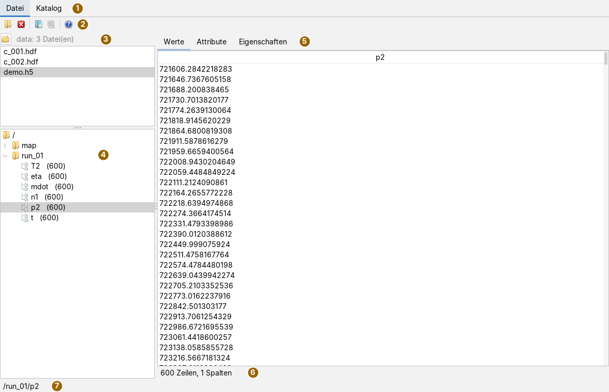
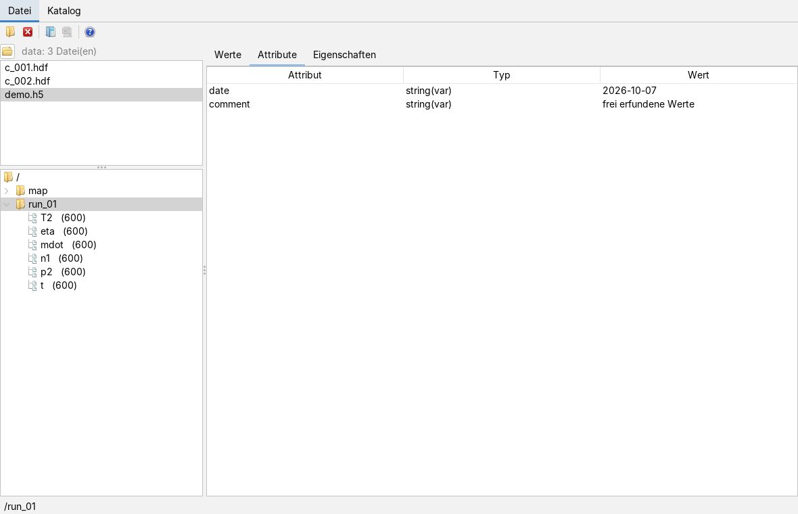
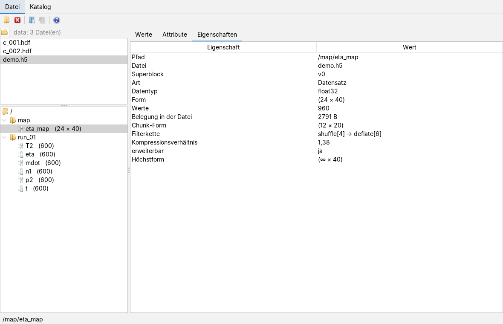
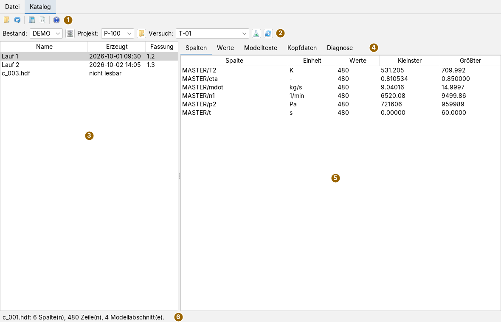
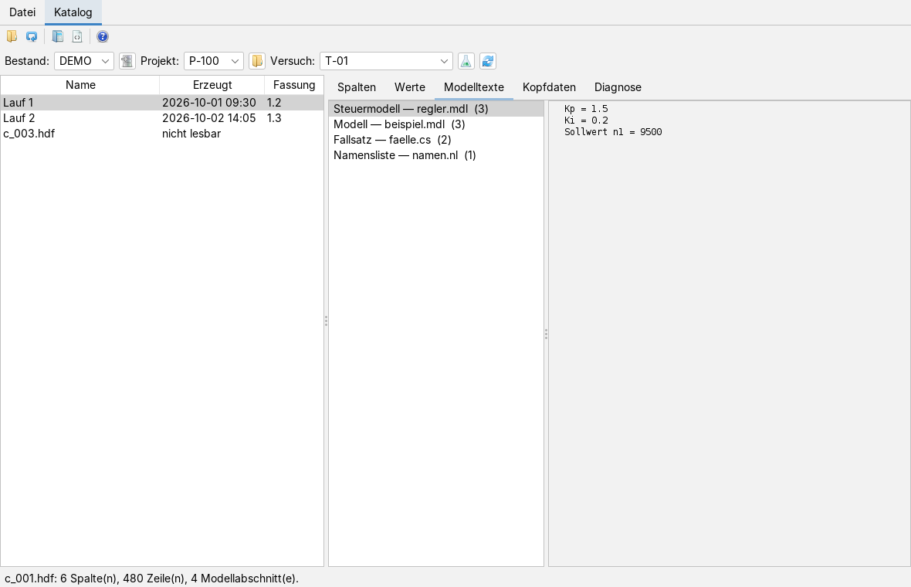
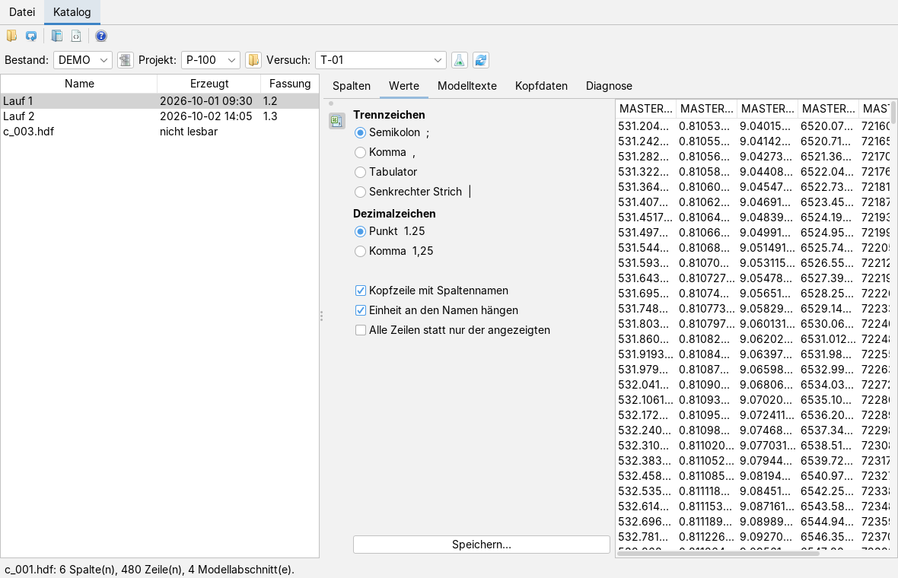
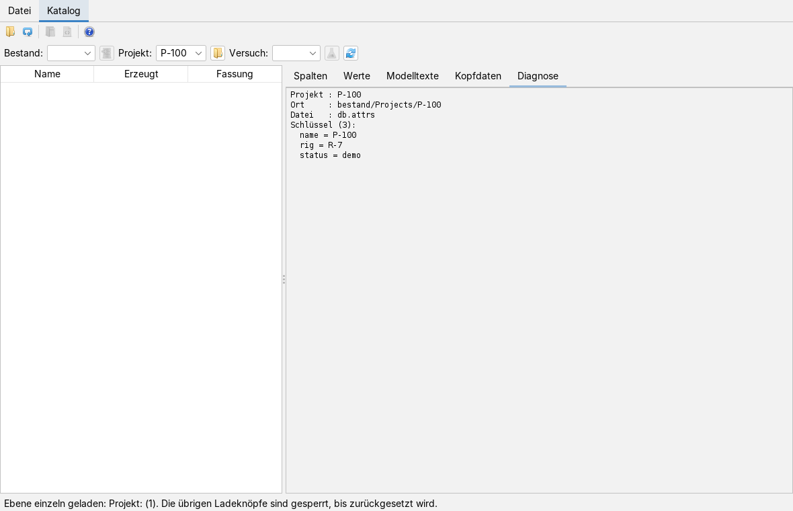

HDF5-Dateien und Versuchskataloge ansehen
Bedienseite, Stand 07.10.2026. Wie man eine HDF5-Datei öffnet, sich durch ihren Baum bewegt, Werte, Attribute und Eigenschaften eines Datensatzes ansieht und ihn als Tabelle weitergibt; dazu, wie man im Katalogreiter über Bestand, Projekt und Versuch zu einer Ergebnisdatei kommt, ihre Spalten, Werte und Modelltexte liest und die Werte als CSV speichert. Die Bilder sind Bildschirmfotos der App mit frei erfundenen Beispieldateien: ein Hochlauf mit sechs Reihen und ein kleines Kennfeld, dazu ein Katalog mit einem Bestand, zwei Projekten und drei Ergebnisdateien.
Das Fenster
Die App öffnet man im Menü Anwendungen mit HDF5-Datei öffnen… oder mit Alt+W. Sie hat zwei Hauptreiter: Datei für eine einzelne HDF5-Datei und Katalog für Ergebnisdateien, die in einer festen Ordnerordnung abgelegt sind. Beide arbeiten nur lesend; es gibt keinen Knopf, der eine HDF5-Datei verändert.

Links oben steht die Liste des Arbeitsverzeichnisses, darunter der Baum der offenen Datei; rechts die drei Reiter zum gewählten Knoten. Beide Trennlinien lassen sich verschieben. Die Statuszeile nennt nach dem Öffnen den Dateinamen, die Zahl der Datensätze und den Vermerk nur lesend, danach den Pfad des gewählten Knotens oder die letzte Meldung.
Die Werkzeugleiste
Die Knöpfe tragen nur Symbole; was sie tun, steht im Tooltip. Als Tabelle laden ist erst aktiv, wenn im Baum ein Knoten gewählt ist, Als CSV sichern erst, nachdem eine Tabelle geladen wurde.
| Symbol | Tooltip | Was geschieht |
|---|---|---|
 | Eine HDF5-Datei zum Ansehen öffnen (nur lesend) | Dateiauswahl für *.h5, *.hdf5, *.he5 und *.hdf; die gewählte Datei ersetzt die offene. |
 | Die Datei schließen und den Baum leeren | Schließt die Datei; Baum und Reiter werden leer. |
| Den gewählten Datensatz oder die gewählte Gruppe als Tabelle bereitstellen — für Statistik, Einheiten und Ausgabe | Macht aus dem gewählten Knoten eine Tabelle und stellt sie der Diagramm-App bereit (siehe Als Tabelle weitergeben). | |
 | Die angezeigte Tabelle als CSV-Datei schreiben | Schreibt die zuletzt geladene Tabelle in eine Datei. |
 | Hilfe: öffnet die Doku zu dieser App (wie F1) | Öffnet diese Seite in der Doku-App, wie F1. Ohne Doku-App nennt die Statuszeile die Adresse der Doku im Netz. |
Eine Datei öffnen
Es gibt zwei Wege. Der Ordnerknopf der Werkzeugleiste öffnet eine einzelne Datei über die Dateiauswahl. Für viele Dateien in einem Ordner ist das Arbeitsverzeichnis bequemer:
- Den Knopf links oben drücken (Arbeitsverzeichnis wählen) und ein Verzeichnis wählen.
- Die Liste darunter zeigt alle Dateien mit der Endung
.hdf,.h5oder.hdf5in diesem Verzeichnis, nach Namen sortiert. Unterverzeichnisse werden nicht durchsucht. Neben dem Knopf stehen der Name des Verzeichnisses und die Zahl der Dateien, der volle Pfad im Tooltip. - Ein Klick auf einen Namen öffnet die Datei.
Beim Öffnen wird nur das Nötigste gelesen: der Baum holt die Kinder einer Gruppe erst beim Aufklappen. Eine große Datei öffnet deshalb so schnell wie eine kleine. Ist die Datei eine HDF4-Datei (die Endung .hdf wird für beide Formate benutzt), sagt das die Statuszeile, und ein Hinweisfenster erklärt es; der Baum bleibt leer. Lässt sich eine Datei nicht lesen, meldet ein Fehlerfenster den Grund.
Der Baum
Die Wurzel heißt /. Gruppen tragen ein Ordnersymbol, Datensätze ein Dokumentsymbol und hinter dem Namen ihre Form, etwa p2 (600) für 600 Werte oder eta_map (24 × 40) für ein zweidimensionales Feld. Ein Klick auf eine Gruppe zeigt ihre Attribute und Eigenschaften, ein Klick auf einen Datensatz zusätzlich seine Werte.
Werte
Der Reiter Werte zeigt den gewählten Datensatz als Tabelle:
| Datensatz | Anzeige |
|---|---|
| eindimensional | eine Spalte mit dem Namen des Datensatzes |
| mehrdimensional | Indexspalten i, j, k … und eine Wertespalte; der letzte Index läuft am schnellsten (die Ordnung von HDF5) |
| Verbundtyp | je Mitglied eine Spalte |
| Zeichenketten | eine Spalte; feste und variable Länge |
Zahlen werden seitenweise gelesen, 4096 Zeilen auf einmal, und zwar die Seite, in der die sichtbaren Zeilen liegen. Die Zeile unter der Tabelle nennt Zeilen und Spalten. Texte und Verbundtypen werden ganz gelesen, höchstens 200 000 Zeilen; ist der Datensatz länger, sagt die Zeile, welcher Ausschnitt gezeigt wird.
Attribute und Eigenschaften

Der Reiter Attribute listet jedes Attribut des gewählten Knotens mit Attribut, Typ (etwa float64, int32, string(var), bei mehreren Werten mit der Anzahl in eckigen Klammern) und Wert.

Der Reiter Eigenschaften nennt für jeden Knoten Pfad, Datei, die Fassung des Superblock und, wenn die Datei sie trägt, die Änderungszeit. Für eine Gruppe folgt die Zahl ihrer Kinder, für einen Datensatz:
- Datentyp, Form und die Zahl der Werte;
- Belegung in der Datei in Byte und die Chunk-Form (bei ungeteilter Ablage ein Strich);
- die Filterkette in der Reihenfolge, in der sie angewandt wurde, und das Kompressionsverhältnis;
- ob der Datensatz erweiterbar ist, und wenn ja, seine Höchstform; ∞ steht für unbegrenzt.
Als Tabelle weitergeben
- Im Baum einen Datensatz oder eine Gruppe wählen.
- Als Tabelle laden drücken. Aus einem Datensatz wird eine Tabelle wie im Reiter Werte. Aus einer Gruppe werden ihre eindimensionalen Reihen nebeneinandergestellt; haben sie verschiedene Längen, gilt die Länge, die am häufigsten vorkommt, und die übrigen Reihen bleiben weg, statt aufgefüllt oder abgeschnitten zu werden. Die Einheit aus dem Attribut
unitoderUNITSwird übernommen. - Die Tabelle steht danach der Diagramm-App zur Verfügung (siehe Charts); die Statuszeile nennt Quelle, Zeilen und Spalten.
- Wer die Tabelle als Datei braucht, drückt Als CSV sichern und wählt einen Dateinamen. Geschrieben wird UTF-8 mit Semikolon als Trennzeichen, einer Kopfzeile mit den Spaltennamen und Dezimalpunkt.
Eine Tabelle hält jeden Wert als Text und braucht damit rund das Dreizehnfache des Speichers der Zahlen. Deshalb gilt eine Grenze von 200 000 Zellen: darüber sagt ein Fenster, dass der Datensatz zu groß für die Tabellenform ist.
Der Katalogreiter
Der Reiter Katalog erschließt Ergebnisdateien, die in einer festen Ordnung liegen: ein Bestand enthält Projekte, ein Projekt Versuche, ein Versuch die Ergebnisdateien. Der Einstieg ist eine Katalogdatei mit der Endung .dbs, die die Bestände nennt.

| Symbol | Tooltip | Was geschieht |
|---|---|---|
| Eine Katalogdatei (.dbs) öffnen und die Bestände einlesen | Liest die Katalogdatei und wählt den ersten Bestand, sein erstes Projekt und dessen ersten Versuch. |
| Die Katalogdatei erneut lesen | Liest dieselbe Katalogdatei noch einmal, etwa nachdem auf der Platte etwas dazugekommen ist. | |
| Die gewählte Containerdatei im Reiter "Datei" als HDF5-Baum öffnen | Öffnet die gewählte Datei im Reiter Datei und wechselt dorthin. | |
| Die gewählte Datei byteweise ansehen — der Hex-Betrachter muss dafür geöffnet sein | Reicht die Datei an den Hex-Betrachter der Dateianalyse; der muss dafür geöffnet sein, sonst sagt es die Statuszeile. | |
| Hilfe: öffnet die Doku zu dieser App (wie F1) | Öffnet diese Seite in der Doku-App. |
Wie ein Katalog aufgebaut ist
Die Katalogdatei ist eine Textdatei mit einer Zeile je Bestand; die Felder sind durch Kommas getrennt, Zeilen mit # am Anfang und leere Zeilen zählen nicht. Das erste Feld ist der Name des Bestands. Als Verzeichnis des Bestands gilt das erste Feld, das auf ein vorhandenes Verzeichnis zeigt, bevorzugt eines mit einem Unterverzeichnis Projects; sonst das zweite Feld. Darunter erwartet die App:
<Bestand>/Projects/<Projekt>/experiments/<Versuch>/dtfs/*.hdfJedes Verzeichnis unter Projects ist ein Projekt, jedes unter experiments ein Versuch. Eine Eigenschaftsdatei db.attrs (oder eine andere *.attrs, *.attr) darin ist nicht Pflicht; steht dort name=…, ist das der angezeigte Name, sonst wird er aus dem Verzeichnisnamen gebildet. Ein Versuch ohne Ordner dtfs erscheint trotzdem, mit dem Zusatz (ohne Dateien). Als Ergebnisdateien zählen *.hdf und *.hdf5.
Bis zu einer Datei
- Katalog öffnen drücken und die
.dbswählen. Die App wählt den ersten Bestand, dessen erstes Projekt und dessen ersten Versuch und füllt die Dateiliste. - Bei Bedarf in Bestand:, Projekt: und Versuch: etwas anderes wählen; jede Wahl füllt die Felder darunter neu.
- Die Dateiliste zeigt je Datei Name, Erzeugt und Fassung, nach Dateinamen sortiert. Gelesen wird dafür nur der Kopf jeder Datei, nicht ihr Inhalt; ein Ordner mit hunderten Dateien bleibt so bedienbar. Der Name ist der im Kopf der Datei hinterlegte, sonst der Dateiname. Eine Datei, die sich nicht lesen lässt, bleibt in der Liste und ist als nicht lesbar gekennzeichnet; wählt man sie, nennt die Statuszeile den Grund.
- Eine Datei anklicken. Ihr Inhalt wird im Hintergrund gelesen; danach nennt die Statuszeile Spalten, Zeilen und Modellabschnitte.
Die Inhaltsreiter
| Reiter | Inhalt |
|---|---|
| Spalten | je Spalte Spalte, Einheit, Zahl der Werte, Kleinster und Größter endlicher Wert. Die Spaltennamen kommen aus dem Namensverzeichnis im Kopfbereich der Datei. |
| Werte | die Werte als Matrix, eine Spalte je Datenspalte, höchstens 5000 Zeilen; hat die Datei mehr, sagt es die Statuszeile. Ungleich lange Spalten enden mit leeren Zellen. |
| Modelltexte | die in der Datei mitgespeicherten Modelldateien: links die Abschnitte mit Art, Dateiname und Zeilenzahl, rechts der Text des gewählten Abschnitts. |
| Kopfdaten | alle Attribute des Kopfbereichs, nach Namen sortiert. |
| Diagnose | zum gewählten Bestand: jedes Feld seiner Katalogzeile mit einem Urteil, welches Verzeichnis benutzt wird, und die Projekte mit dem Zustand ihrer Eigenschaftsdateien. Gerechnet wird der Text erst, wenn der Reiter vorne liegt. Was der Leser in einer Datei übergangen hat, wird hier angehängt. |

Die Spaltenbreite in Werte ist fest 80 Pixel; die Tabelle rollt waagerecht, und der volle Spaltenname steht im Tooltip des Spaltenkopfs. Spalten lassen sich breiter ziehen, aber nicht verschieben.
Werte als CSV speichern

Neben der Wertetabelle steht die Karte CSV-Ausgabe, geöffnet über das Symbol in der schmalen Leiste am linken Rand. Sie bleibt sichtbar, während man die Tabelle ansieht:
- Trennzeichen: Semikolon, Komma, Tabulator oder senkrechter Strich.
- Dezimalzeichen: Punkt oder Komma. Für eine deutsche Tabellenkalkulation Semikolon und Komma wählen. Komma als Trennzeichen und als Dezimalzeichen zugleich wird abgewiesen, weil die Datei nicht mehr zu zerlegen wäre.
- Kopfzeile mit Spaltennamen, und mit Einheit an den Namen hängen in der Form
p2 [Pa]. - Alle Zeilen statt nur der angezeigten: ohne Häkchen die ersten 5000 Zeilen, mit Häkchen alle.
Speichern… schlägt den Dateinamen der Ergebnisdatei mit der Endung .csv vor und hängt die Endung an, wenn sie fehlt. Geschrieben wird UTF-8; ungleich lange Spalten bekommen leere Zellen und werden nicht gekürzt. Die Statuszeile nennt Datei, Zeilen und Spalten.
Eine Ebene einzeln laden
Manchmal ist keine Katalogdatei zur Hand, oder man will nur ein Projekt oder einen Versuch ansehen. Dafür steht neben jedem Auswahlfeld ein Ladeknopf, dazu ein Knopf zum Zurücksetzen. Ihre Tooltips sagen ausführlich, was sie tun; hier steht ihr Kurzname:
| Symbol | Knopf | Was geschieht |
|---|---|---|
| Bestand laden | Eine .dbs wählen; nur die Bestände werden gelesen, Projekt- und Versuchsfeld bleiben leer. | |
| Projekte laden | Ein Verzeichnis oder eine Eigenschaftsdatei darin wählen: ein Sammelverzeichnis Projects (oder eines, unter dem es liegt) bringt alle Projekte daraus, ein einzelnes Projektverzeichnis genau dieses. |
| Versuche laden | Ebenso für Versuche: ein Sammelverzeichnis experiments oder ein einzelnes Versuchsverzeichnis. | |
| Zurücksetzen | Leert alle Felder, die Dateiliste und die Inhaltsreiter und gibt alle Ladeknöpfe wieder frei. Immer bedienbar. |

Wer eine Ebene einzeln lädt, sperrt die Ladeknöpfe der beiden anderen; der eigene bleibt bedienbar, um dieselbe Ebene noch einmal zu lesen. Solange eine Ebene einzeln geladen ist, füllt eine Wahl im Auswahlfeld die Ebene darunter nicht nach. Stattdessen zeigt ein gewähltes Projekt seine Eigenschaften (Ort, Eigenschaftsdatei, jeder Schlüssel) im Reiter Diagnose; ein gewählter Versuch füllt die Dateiliste und zeigt seine Eigenschaften ebenso. Zurücksetzen hebt die Sperre auf.
Was gespeichert wird
Beim Sichern des Arbeitsbereichs merkt sich die App den Pfad der Datei, die im Reiter Datei offen ist, und öffnet sie beim nächsten Start wieder, sofern sie noch lesbar ist; sonst bleibt der Reiter leer, ohne Fehlerfenster. Arbeitsverzeichnis, Katalog, Auswahl und die Einstellungen der CSV-Karte werden nicht gespeichert. In Dateien schreibt die App nur die CSV-Dateien, die man ausdrücklich speichert.
Tastatur und Maus
Alt+W öffnet die App, F1 diese Seite. Im Baum wählen die Pfeiltasten und ein Mausklick; die Pfeiltasten nach rechts und links und ein Doppelklick klappen eine Gruppe auf und zu. In den Listen und Tabellen wählen Pfeiltasten und Mausklick; Spaltenränder lassen sich mit der Maus verschieben. Weitere Tastenkürzel hat die App nicht.
Grenzen
- Die App liest nur. HDF4-Dateien werden erkannt, aber nicht angezeigt; netCDF-Dateien öffnet sie nicht.
- Die Wertetabelle des Katalogs zeigt höchstens 5000 Zeilen; die CSV-Karte kann alle schreiben.
- Als Tabelle weitergeben geht bis 200 000 Zellen; einen Weg, Datensätze unmittelbar als Zahlenfeld an die Diagramme zu geben, hat die Oberfläche nicht.
- Das Arbeitsverzeichnis wird nicht rekursiv durchsucht.
- Der Text im Reiter Diagnose zu einem Bestand ist nur deutsch und nennt den vollen Pfad des Bestands.
- Als Ergebnisdateien im Katalog gelten nur
*.hdfund*.hdf5, nicht*.h5.
Was die App kann und worauf sie aufbaut, steht in der Übersicht; der HDF5-Leser selbst in fileformats.
Symbole: Fugue Icons von Yusuke Kamiyamane, Lizenz CC BY 3.0.